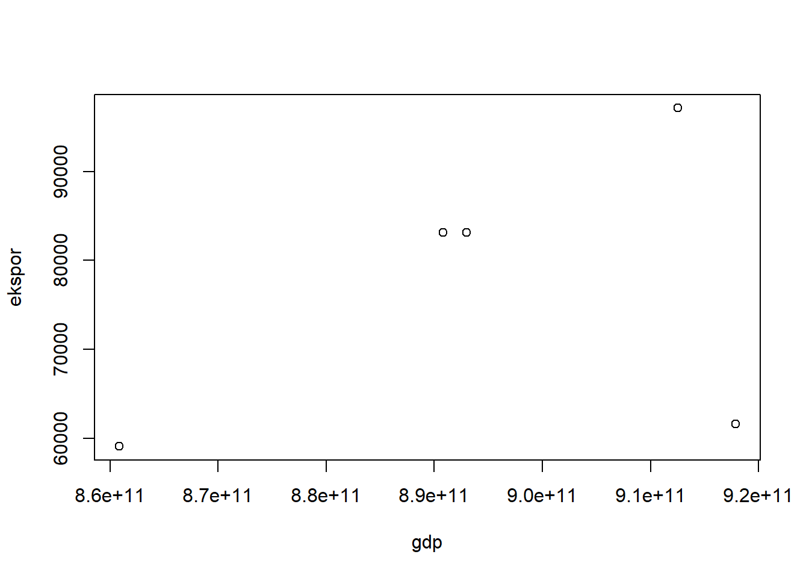

setwd('D:/metopel ace')
library('tidyverse')
library('readxl')
library('writexl')Melihat hubungan ekspor Tembakau dengan PDB Negara Indonesia di tahun 2011-2015
Metode Penelitian Politeknik APP Jakarta
.jpg)
1 Pendahuluan
1.1 Latar belakang
Indonesia selalu berusaha untuk meningkatkan pembangunan di segala bidang dengan tujuan utama mewujudkan masyarakat adil, makmur, dan sejahtera terutama dalam bidang ekonomi. Pertumbuhan ekonomi sebagai perkembangan kegiatan dalam perekonomian yang dapat membuat barang dan jasa yang akan diproduksi oleh masyarakat mengalami peningkatan.
Ekspor adalah salah satu hal yang berperan penting dalam peningkatan PDB Negara dan juga Devisa, melalui Ekspor suatu negara dapat menambah nilai jual suatu komoditi dibandingkan dijual didalam pasar domestik. Selain daripada itu, secara tidak langsung jika permintaan akan suatu produk dalam negeri meningkat untuk dijual keluar maka otomatis akan meningkatkan lapangan kerja masyarakat yang bekerja di suatu industri tertentu, hal ini merupakan yang sangat penting itu peningkatan PDB suatu negara.
Salah satu Ekspor yang berpengaruh terhadap Indonesia adalah Ekspor komoditas tembakau. Penanaman dan penggunaan tembakau di Indonesia sudah dikenal sejak lama. Komoditi tembakau mempunyai arti yang cukup penting, tidak hanya sebagai sumber pendapatan bagi para petani, tetapi juga bagi Negara. Usaha pertanian tembakau merupakan usaha padat karya (Hanum, 2008).
1.2 Ruang lingkup
Ruang lingkup dalam pembahasan penelitian ini adalah berupa volume ekspor Tembakau dan tingkat PDB negara Indonesia pada tahun 2011-2015. Penelitian ini juga fokus pada pengaruh ekspor tembakau terhadap tingkat PDB negara Indonesia pada tahun 2011-2015. Data-data pada penelitian ini menggunakan sumber dari Badan Pusat Statistik (BPS).
1.3 Rumusan masalah
- Bagaimana Pengaruh Ekspor Tembakau Indonesia terhadap PDB Indonesia?
- Apakah Ekspor Tembakau berdampak besar bagi PDB Indonesia?
1.4 Tujuan dan manfaat penelitian
Tujuan penelitian ini untuk menyelesaikan tugas UAS pengganti matakuliah Metodologi Penelitian Semester 3 prodi Perdagangan Internasional Wilayah ASEAN-RRT di Politeknik APP Jakarta. selain itu, untuk melihat hubungan ekspor tembakau terhadap tingkat PDB negara Indonesia pada tahun 2011-2015.
Manfaat penelitian ini adalah pembaca dapat mengetahui besaran pengaruh ekspor tembakau indonesia terhadap PDB yang didapatkan selama periode 2011-2015.
1.5 Package
Packages yang digunakan antara lain sebagai berikut:
2 Studi pustaka
Indonesia merupakan salah satu penghasil tanaman tembakau terbesar di dunia. Sejak zaman kolonial Belanda, tembakau menjadi primadona komoditas perkebunan di Indonesia. Nilai ekonomi tembakau yang tinggi membuat Indonesia mendapat julukan “emas hijau”.
Badan Pusat Statistik (BPS) melaporkan nilai ekspor tembakau nasional pada Januari-Desember 2021 mencapai US$ 73,84 juta atau sekitar Rp 1,06 triliun. Nilai itu meningkat 16% dibandingkan penjualan pada periode sama tahun sebelumnya, yaitu US$ 63,65 juta atau sekitar Rp 914,09 miliar.Sedangkan volume ekspor Indonesia mencapai 7,65 juta kg. Volume tersebut turun 13,38% dibandingkan ekspor pada periode sama tahun 2020 yang berjumlah 8,83 juta kg.
Salvator (1990) menegaskan bahwa ekspor merupakan salah satu mesin pendorong pertumbuhan ekonomi. Kajian yang dilakukan oleh Salvator menunjukkan bahwa ekspor merupakan salah satu faktor utama bagi negara berkembang untuk dapat meningkatkan pertum- buhan ekonomi. Peningkatan ekspor dan investasi yang dilakukan oleh negara berkembang dapat mendorong output dan pertumbuhan ekonomi. Sehingga peningkatan ekspor tersebut dapat menghasilkan devisa yang akan digunakan untuk membiayai impor bahan baku dan barang modal yang diperlukan dalam proses produksi yang akan membentuk nilai tambah. Agregasi nilai tambah yang dihasilkan oleh seluruh unit produksi dalam perekonomian merupakan nilai PDB. Peningkatan PDB dari tahun ke tahun yang dinilai berdasarkan harga konstan merupakan pertumbuhan ekonomi (Pujoalwanto, 2014).
3 Metode penelitian
3.1 Data
Data yang digunakan pada penelitian ini berupa angka ekspor tembakau dan PDB Indonesia. Penelitian ini menggunakan data yang berasal dari Badan Pusat Statistik (BPS)
| Negara | Tahun | PDB | Ekspor |
|---|---|---|---|
| Indonesia | 2011 | 892969107923,094 | 83165,7 |
| Indonesia | 2012 | 917869910105,749 | 61638,8 |
| Indonesia | 2013 | 912524136718,018 | 97119,4 |
| Indonesia | 2014 | 890814755233,225 | 83165,7 |
| Indonesia | 2015 | 860854235065,079 | 59106,1 |
Penelitian ini menggunakan data PDB Indonesia dan Jumlah ekspor tembakau pada tahun 2011-2015.
library(readxl)
dat<-read_excel("Book1.xlsx")
head(dat)# A tibble: 5 × 4
negara tahun gdp ekspor
<chr> <dbl> <dbl> <dbl>
1 Indonesia 2011 892969107923. 83166.
2 Indonesia 2012 917869910106. 61639.
3 Indonesia 2013 912524136718. 97119.
4 Indonesia 2014 890814755233. 83166.
5 Indonesia 2015 860854235065. 59106.dat<-read_excel('Book1.xlsx')
plot(dat$gdp,dat$ekspor,xlab="gdp",ylab="ekspor")
3.2 Metode analisis
Metode yang dipilih adalah regresi univariat atau Ordinary Least Square (OLS) dengan 2 variabel independen. Penelitian ini bermaksud mencari hubungan antara PDB dan Ekspor. Spesifikasi yang dilakukan adalah:
\[ y_{t}=\beta_0 + \beta_1 x_t+\mu_t \] di mana \(y_t\) adalah PDB dan \(x_t\) adalah Ekspor.
4 Pembahasan
4.1 Pembahasan masalah
Dikarenakan saya menggunakan OLS 2 Variabel, maka disini saya menghubungkan data banyaknya ekspor dan data jumlah gdp indonesia pada tahun 2011-2015, data sebagai berikut:
library(readxl)
dat<-read_excel('Book1.xlsx')
head(dat)# A tibble: 5 × 4
negara tahun gdp ekspor
<chr> <dbl> <dbl> <dbl>
1 Indonesia 2011 892969107923. 83166.
2 Indonesia 2012 917869910106. 61639.
3 Indonesia 2013 912524136718. 97119.
4 Indonesia 2014 890814755233. 83166.
5 Indonesia 2015 860854235065. 59106.4.2 Analisis masalah
Dapat dilihat dari tabel di bawah adalah hasil regeresi.
dat<-read_excel('Book1.xlsx')
reg1<-lm(gdp~ekspor,data=dat)
summary(reg1)
Call:
lm(formula = gdp ~ ekspor, data = dat)
Residuals:
1 2 3 4 5
-5.539e+09 3.128e+10 6.292e+09 -7.694e+09 -2.434e+10
Coefficients:
Estimate Std. Error t value Pr(>|t|)
(Intercept) 8.525e+11 5.779e+10 14.750 0.000676 ***
ekspor 5.535e+05 7.393e+05 0.749 0.508356
---
Signif. codes: 0 '***' 0.001 '**' 0.01 '*' 0.05 '.' 0.1 ' ' 1
Residual standard error: 2.38e+10 on 3 degrees of freedom
Multiple R-squared: 0.1575, Adjusted R-squared: -0.1234
F-statistic: 0.5607 on 1 and 3 DF, p-value: 0.50845 Kesimpulan
Dari hasil regresi diatas dapat diketahui bahwa rata rata ekspor tembakau Indonesia pada tahun 2011-2015 berpengaruh terhadap gdp sebanyak 5.535e+05 (Rp.553.500.000), dengan kata lain PDB Indonesia dipengaruhi oleh ekspor tembakau sebesar 0,0124% pada tahun 2011-2015. Dari data yang sudah didapatkan, dapat dikatakan rata rata pengaruh Ekspor tembakau Indonesia terhadap PDB nya tidak terlalu besar, tetapi juga tidak bisa dikatakan kecil. Hal ini dipengaruhi oleh Ekspor tembakau Indonesai sendiri mengalami penurunan yang signifikan di tiap tiap tahunnya.
Saran
Ekspor tembakau Indonesia harus ditingkatkan lebih lagi baik dalam segi kualitas maupun kuantitas, melihat dari penurnan ekspornya yang signifikan, Indonesia harus lebih memperhatikan nya lagi secara masif, agar dapat meningkatkan kembali minat dunia akan tembakau Indonesia. Jika melihat sejarahnya di negara eropa, tembakau Indonesia pernah menjadi primadona dengan berbagai julukan yang terkenal. Indonesia harus dapat kembali mengembalikan masa kejayaan tersebut agar pengaruh ekspor tembakau terhadap PDB dapat lebih berpengaruh dan pendapatan Indonesia meningkat.
6 Referensi
Rais, Akhyar. (2008). Prospek Ekspor dan Impor Tembakau. http://repository.pertanian.go.id/handle/123456789/15660
Mulyandri, Dini (2019). Analsis Faktor-Faktor Yang Mempengaruhi Ekspor Tembakau Indonesia
http://eprints.ums.ac.id/76563/11/NASKAH%20PUBLIKASI.pdf
Hadi, Al Mahdi (2022). Analsis Pengaruh Investasi, Tenaga Kerja, dan Ekspor Terhadap PDB Indonesia Tahun 1997-2020.
file:///C:/Users/Noname/Downloads/8102-15634-1-SM.pdf